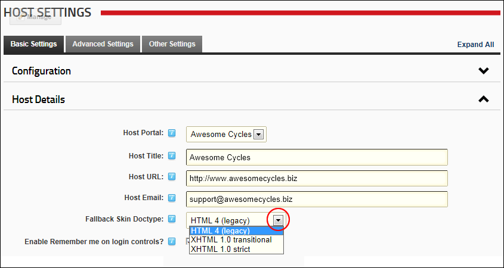

Setting the Fallback Skin Doctype
How to set the fallback skin doctype for web pages on all sites within this DNN installation.
- Navigate to Host >
 Host Settings.
Host Settings.
- Select the Basic Settings tab.
- Expand the Host Details section.
- At Fallback Skin Doctype, select from the following options:
- HTML 4 (legacy): Enables parsing and validation of HTML documents by SGML tools based on the Document Type Definition (DTD)
- XHTML 1.0 transitional: The XML equivalent of HTML 4.01 Transitional. Includes the presentational elements (such as center, font and strike) excluded from the strict version.
- XHTML 1.0 strict: The XML equivalent to strict HTML 4.01, and includes elements and attributes that have not been marked deprecated in the HTML 4.01 specification.

-
Click the Update button.